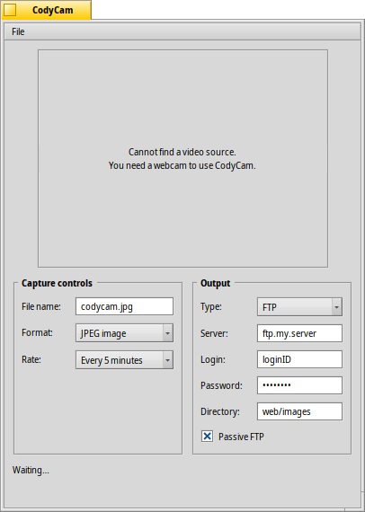

日本語
日本語 Français
Français Deutsch
Deutsch Italiano
Italiano Русский
Русский Español
Español Svenska
Svenska Українська
Українська 中文 ［中文］
中文 ［中文］ Português
Português Suomi
Suomi Slovenčina
Slovenčina English
English CodyCam
CodyCam
| Deskbar メニュー： | ||
| 場所： | /boot/system/apps/CodyCam | |
| 設定ファイル： | ~/config/settings/codycam |
CodyCamを使用すると、接続されたウェブ・カメラや他のビデオ入力機器から設定された時間間隔で画像を取得し、FTP経由でその画像を保存することができます。
プレビュー画面の左下でファイル名を指定します。このファイル名の後に、画像が取得されるたびに1ずつ増加する数字が付け加わります。ファイル名のすぐ下の部分で、ファイルの形式と画像が取得される頻度を決定します。
プレビュー画面の右下でFTPまたはsFTP (SSHが使用できる場合)を選択し、サーバーに画像を保存するために必要な情報を入力します。